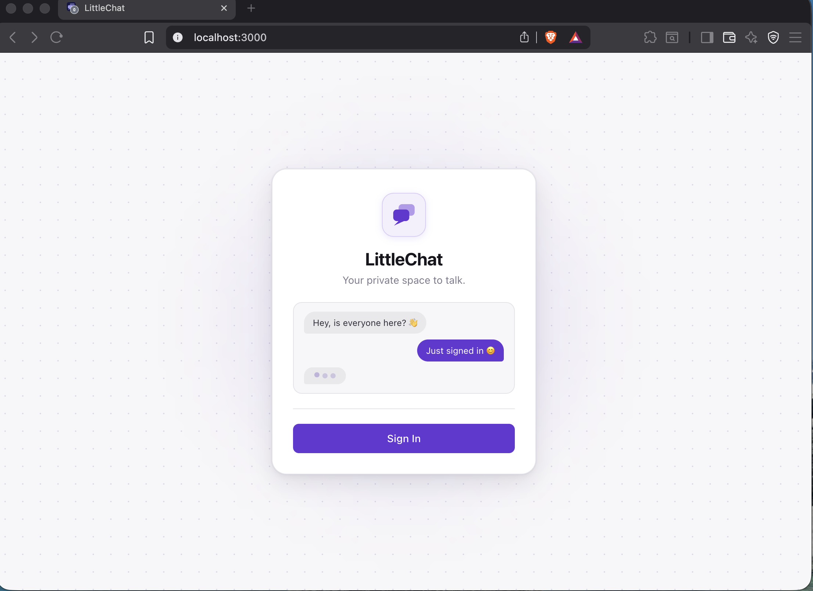
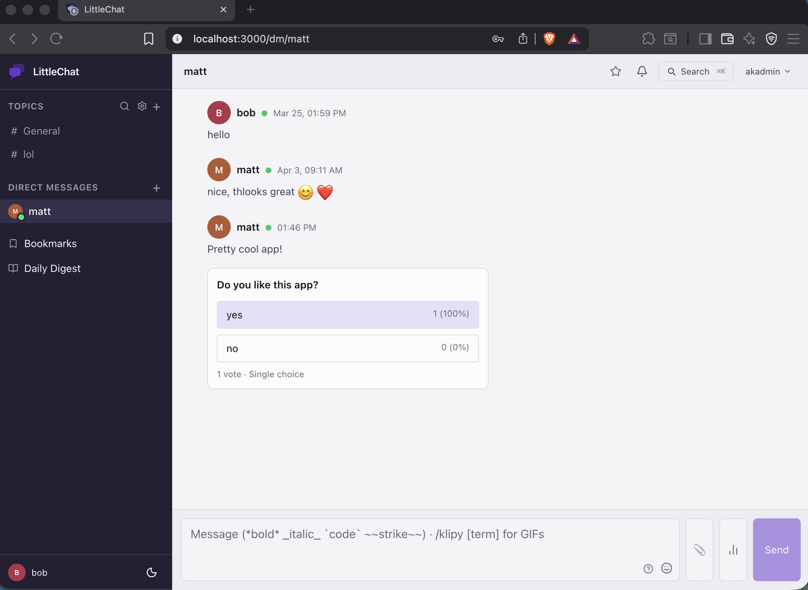
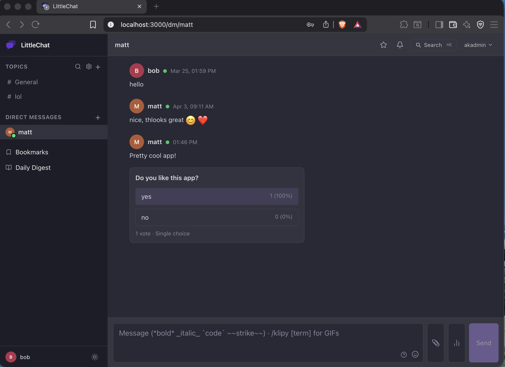
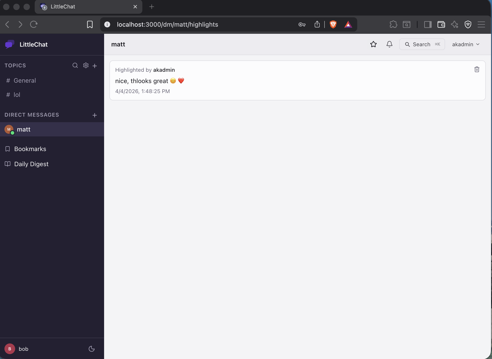
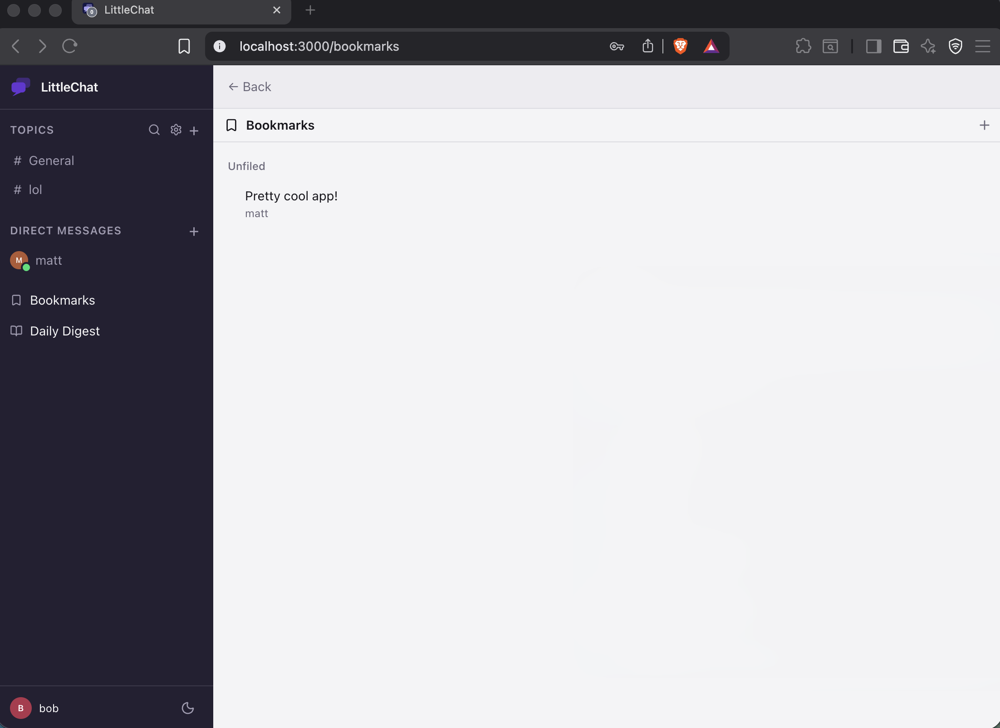
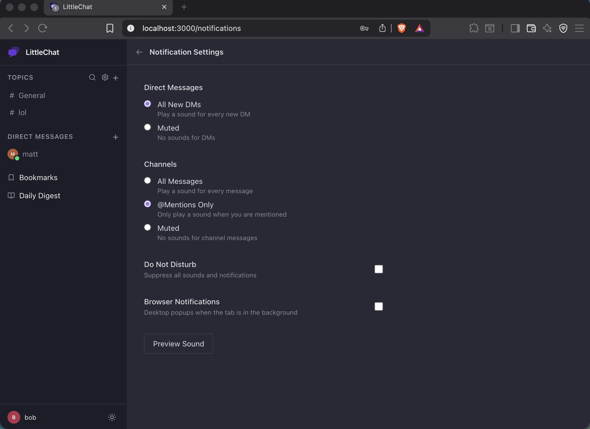

LittleChat is a self-hosted real-time chat app for trusted private groups. Topics, direct messages, reactions, file sharing, @mentions — everything your crew needs, on your own infrastructure.






Built with real use in mind — not hypothetical enterprise workflows.
Instant delivery over SignalR WebSockets. Persist-first architecture means no phantom messages — ever.
Organise conversations into topics. Drag-and-drop reordering. Discover and join public topics at your own pace — General is the only room you're added to automatically.
Private one-on-one conversations that feel personal. DMs are first-class — same real-time stack, same reliability.
React to any message with any emoji. Live reaction counts sync across all connected clients instantly.
Share images, docs, and files up to 200MB. Inline image previews, HEIC support, all stored on your own server.
Mention anyone with @name. Browser notifications, unread badges, and a dedicated notification feed keep you in the loop.
Compose messages with a live Tiptap editor. Bold, italic, code blocks, and links — rendered beautifully in the feed.
See who's online at a glance. Presence is tracked in Redis for low-latency, accurate online/offline status across all clients.
Manage users, topics, and audit logs from a built-in admin panel. Full audit trail of all moderation actions.
Boring technology choices, intentionally. Reliable, well-understood, production-proven.
Browse the source, read the architecture, or just see how it all fits together.